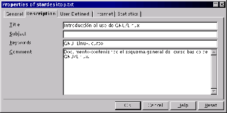

Next: El cuadro de diálogo
Up: StarDesktop: El Entorno de
Previous: Modificación de un documento
Índice General
Es posible anotar datos adicionales sobre el documento, así como
obtener sus características básicas mediante esta opción. Si se elige
en el menú [Archivo] la opción Propiedades, aparece el cuadro de
diálogo Propiedades, que consta de cinco fichas. La figura
5.12 muestra la ficha
Descripción, en la que se pueden definir los datos que permiten buscar
más fácilmente el archivo.
Figura 5.12:
Propiedades del documento
|

|
Proyecto Cursos - LuCAS - http://lucas.hispalinux.es/htmls/cursos.html